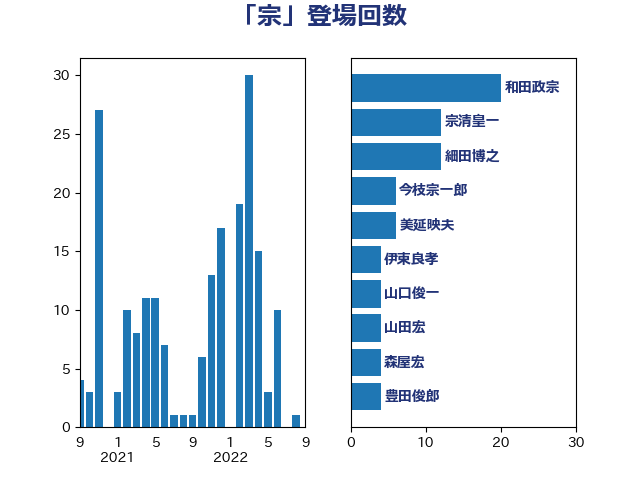

単語「宗」

| 和田政宗 | 自由民主党 | 20 回 |
| 宗清皇一 | 自由民主党 | 12 回 |
| 細田博之 | 自由民主党 | 12 回 |
| 今枝宗一郎 | 自由民主党 | 6 回 |
| 美延映夫 | 日本維新の会 | 6 回 |
| 伊東良孝 | 自由民主党 | 4 回 |
| 山口俊一 | 自由民主党 | 4 回 |
| 山田宏 | 自由民主党 | 4 回 |
| 森屋宏 | 自由民主党 | 4 回 |
| 豊田俊郎 | 自由民主党 | 4 回 |
| 赤木正幸 | 日本維新の会 | 4 回 |
| 馬場成志 | 自由民主党 | 4 回 |
| 中野洋昌 | 公明党 | 3 回 |
| 山東昭子 | 自由民主党 | 3 回 |
| 杉尾秀哉 | 立憲民主党 | 3 回 |
| 根本匠 | 自由民主党 | 3 回 |
| 道下大樹 | 立憲民主党 | 3 回 |
| 青木一彦 | 自由民主党 | 3 回 |
| 上田清司 | 国民民主党 | 2 回 |
| 上野賢一郎 | 自由民主党 | 2 回 |
| 中谷一馬 | 立憲民主党 | 2 回 |
| 山本順三 | 自由民主党 | 2 回 |
| 徳永エリ | 立憲民主党 | 2 回 |
| 木原誠二 | 自由民主党 | 2 回 |
| 松下新平 | 自由民主党 | 2 回 |
| 橋本岳 | 自由民主党 | 2 回 |
| 江島潔 | 自由民主党 | 2 回 |
| 浜地雅一 | 公明党 | 2 回 |
| 海江田万里 | 立憲民主党 | 2 回 |
| 田村貴昭 | 日本共産党 | 2 回 |
| 田畑裕明 | 自由民主党 | 2 回 |
| 茂木敏充 | 自由民主党 | 2 回 |
| 薗浦健太郎 | 自由民主党 | 2 回 |
| 足立康史 | 日本維新の会 | 2 回 |
| 鈴木宗男 | 日本維新の会 | 2 回 |
| 長坂康正 | 自由民主党 | 2 回 |
| 阿部知子 | 立憲民主党 | 2 回 |
| 黄川田仁志 | 自由民主党 | 2 回 |
| 下野六太 | 公明党 | 1 回 |
| 伊藤忠彦 | 自由民主党 | 1 回 |
| 吉田統彦 | 立憲民主党 | 1 回 |
| 小倉將信 | 自由民主党 | 1 回 |
| 小泉進次郎 | 自由民主党 | 1 回 |
| 山谷えり子 | 自由民主党 | 1 回 |
| 岸真紀子 | 立憲民主党 | 1 回 |
| 平口洋 | 自由民主党 | 1 回 |
| 林芳正 | 自由民主党 | 1 回 |
| 森まさこ | 自由民主党 | 1 回 |
| 田名部匡代 | 立憲民主党 | 1 回 |
| 田嶋要 | 立憲民主党 | 1 回 |
| 石田真敏 | 自由民主党 | 1 回 |
| 神田憲次 | 自由民主党 | 1 回 |
| 神田潤一 | 自由民主党 | 1 回 |
| 福岡資麿 | 自由民主党 | 1 回 |
| 自見はなこ | 自由民主党 | 1 回 |
| 落合貴之 | 立憲民主党 | 1 回 |
| 越智隆雄 | 自由民主党 | 1 回 |
| 高木かおり | 日本維新の会 | 1 回 |
| 高鳥修一 | 自由民主党 | 1 回 |